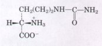
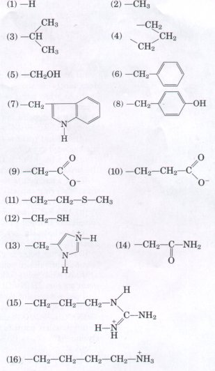
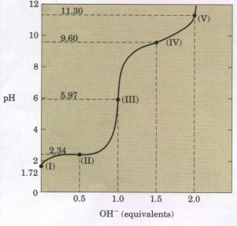
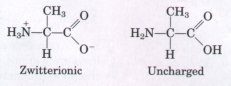
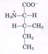
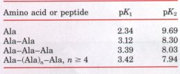

The 20 amino acids commonly found as hydrolysis products of proteins contain an α-carboxyl group, an α-amino group, and a distinctive R group substituted on the α-carbon atom. The α-carbon atom of the amino acids (except glycine) is asymmetric, and thus amino acids can exist in at least two stereoisomeric forms. Only the L stereoisomers, which are related to the absolute configuration of L-glyceraldehyde, are found in proteins. The amino acids are classified on the basis of the polarity of their R groups. The nonpolar, aliphatic class includes alanine, glycine, isoleucine, leucine, proline, and valine. Phenylalanine, tryptophan, and tyrosine have aromatic side chains and are also relatively hydrophobic. The polar, uncharged class includes asparagine, cysteine, glutamine, methionine, serine, and threonine. The negatively charged (acidic) amino acids are aspartate and glutamate; the positively charge (basic) ones are arginine, histidine, and lysine. There are also a large ndmber of nonstandard amino acids that occur in some proteins (as a result of the modification of standard amino acids) or as free metabolites in cells.
Monoamino monocarboxylic amino acids are diprotic acids (+H3NCH(R)COOH) at low pH. As the pH is raised to about 6, near the isoelectric point, the proton is lost from the carboxyl group to form the dipolar or zwitterionic species +H3NCH(R)COO-, which is electrically neutral. Further increase in pH causes loss of the second proton, to yield the ionic species H2NCH(R)COO-. Amino acids with ionizable R groups may exist in additional ionic species, depending on the pH and the pKa of the R group. Thus amino acids vary in their acid-base properties. Amino acids form colored derivatives with ninhydrin. Other colored or fluorescent derivatives are formed in reactions of the α-amino group of amino acids with fluorescamine, dansyl chloride, dabsyl chloride, and 1-fluoro-2,4-dinitrobenzene. Complex mixtures of amino acids can be separated and identified by ionexchange chromatography or HPLC.
Amino acids can be joined covalently through peptide bonds to form peptides, which can also be formed by incomplete hydrolysis of polypeptides. The acid-base behavior and chemical reactions of a peptide are functions of its amino-terminal amino group, its carboxyl-terminal carboxyl group, and its R groups. Peptides can be hydrolyzed to yield free amino acids. Some peptides occur free in cells and tissues and have specific biological functions. These include some hormones and antibiotics, as well as other peptides with powerful biological activity.
General
Cantor, C.R. & Schimmel, P.R. (1980) Biophysical Chemistry, Part I: The Conformation of Biological Macromolecules, W.H. Freeman and Company, San Francisco.
Excellent textbook outlining the properties of biological macromolecules and their monomeric subunits.
Creighton, T.E. (1984) Proteins: Structures and Molecular Properties, W.H. Freeman and Company, New York.
Very useful general source.
Dickerson, R.E. & Geis, I. (1983) Proteins: Structure, Function, and Evolution, 2nd edn, The Benjamin/Cummings Publishing Company, Menlo Park, CA.
Beautifully illustrated and interesting account.
Amino Acids
Corrigan, J.J. (1969) n-Amino acids in animals. Science 169, 142-148.
Meister, A. (1965) Biochemistry of the Amino Acids, 2nd edn, Vols. 1 and 2, Academic Press, Inc., New York.
Encyclopedic treatment of the properties, occurrence, and metabolism of amino acids.
Montgomery, R. & Swenson, C.A. (1976) Quantitative Problems in the Biochemical Sciences, 2nd edn, W.H. Freeman and Company, New York.
Segel, I.H. (1976) Biochemical Calculations, 2nd edn, John Wiley & Sons, New York.Peptides
Haschemeyer, R.H. & Haschemeyer, A.E.V. (1973) Proteins: A Guide to Study by Physical and Chemical Methods, John Wiley & Sons, New York.
Merrifield, B. (1986) Solid phase synthesis. Science 232, 341-347.
Smith, L.M. (1988) Automated synthesis and sequence analysis of biological macromolecules. Analyt. Chem. 60, 381A-390A.
1. Absolute Configuration of Citrulline Is citrulline isolated from watermelons (shown below) a D- or L-amino acid? Explain.

2. Relation between the Structures and Chemical Properties of the Amino Acids The structures and chemical properties of the amino acids are crucial to understanding how proteins carry out their biological functions. The structures of the side chains of 16 amino acids are given below. Name the amino acid that contains each structure and match the R group with the most appropriate description of its properties, (a) to (m). Some of the descriptions may be used more than once.
(a) Small polar R group
containing a hydroxyl group; this amino acid is important
in the active site of some enzymes. |
 |
3. Relationship between the Titration Curue and the Acid-Base Properties of Glycine A 100 mL solution of 0.1 M glycine at pH 1.72 was titrated with 2 M NaOH solution. During the titration, the pH was monitored and the results were plotted in the graph shown. The key points in the titration are designated I to V on the graph. For each of the statements below, identify the appropriate key point in the titration and justify your choice.

(a) At what point will glycine be present predominantly as the species +H3N-CH2-COOH?
(b) At what point is the average net charge of glycine +½?
(c) At what point is the amino group of half of the molecules ionized?
(d) At what point is the pH equal to the pKa of the carboxyl group?
(e) At what point is the pH equal to the pKa of the protonated amino group?
(f) At what points does glycine have its maximum buffering capacity?
(g) At what point is the average net charge zero?
(h) At what point has the carboxyl group been completely titrated (first equivalence point)?
(i) At what point are half of the carboxyl groups ionized?
(j) At what point is glycine completely titrated (second equivalence point)?
(k) At what point is the structure of the predominant species +H3N-CH2-COO-?
(1) At what point do the structures of the predominant species correspond to a 50: 50 mixture of +H3N-CH2-COO- and H2N-CH2-COO-?
(m) At what point is the average net charge of glycine -1?
(n) At what point do the structures of the predominant species consist of a 50:50 mixture of +H3N-CH2-COOH and +H3N-CH2-COO-?
(o) What point corresponds to the isoelectric point?
(p) At what point is the average net charge on glycine -½?
(q) What point represents the end of the titration?
(r) If one wanted to use glycine as an efficient buffer, which points would represent the worst pH regions for buffering power?
(s) At what point in the titration is the predominant species H2N-CH2-COO-?

4. How Much Alanine Is Present as the Completely Uncharged Species? At a pH equal to the isoelectric point, the net charge on alanine is zero. Two structures can be drawn that have a net charge of zero (zwitterionic and uncharged forms), but the predominant form of alanine at its pI is zwitterionic.(a) Explain why the form of alanine at its pI is zwitterionic
rather than completely uncharged.
(b) Estimate the fraction of alanine present at its pI as the
completely uncharged form. Justify your assumptions.
5. Ionization State of Amino Acids Each ionizable group of an amino acid can exist in one of two states, charged or neutral. The electric charge on the functional group is determined by the relationship between its pKa and the pH of the solution. This relationship is described by the HendersonHasselbalch equation.
(a) Histidine has three ionizable functional groups. Write the relevant equilibrium equations for its three ionizations and assign the proper pKa for each ionization. Draw the structure of histidine in each ionization state. What is the net charge on the histidine molecule in each ionization state?
(b) Draw the structures of the predominant ionization state of histidine at pH 1, 4, 8, and 12. Note that the ionization state can be approximated by treating each ionizable group independently.
(c) What is the net charge of histidine at pH 1, 4, 8, and 12? For each pH, will histidine migrate toward the anode (+) or cathode (-) when placed in an electric field?
6. Preparation of a Glycine Buffer Glycine is commonly used as a buffer. Preparation of a 0.1 M glycine buffer starts with 0.1 M solutions of glycine hydrochloride (HOOC-CH2-NH3+Cl-) and glycine (-OOC-CH2-NH3 ), two commercially available forms of glycine. What volumes of these two solutions must be mixed to prepare 1 L of 0.1 M glycine buffer having a pH of 3.2? (Hint: See Box 4-2)
7. Separation of Amino Acids by Ion-Exchange Chromatography Mixtures of amino acids are analyzed by first separating the mixture into its components through ion-exchange chromatography. On a cation-exchange resin containing sulfonate groups (see Fig. 5-12), the amino acids flow down the column at different rates because of two factors that retard their movement: (1) ionic attraction between the -S03- residues on the column and positively charged functional groups on the amino acids and (2) hydrophobic interaction between amino acid side chains and the strongly hydrophobic backbone of the polystyrene resin. For each pair of amino acids listed, determine which member will be eluted first from an ion-exchange column by a pH 7.0 buffer.
(a) Asp and Lys
(b) Arg and Met
(c) Glu and Val
(d) Gly and Leu
(e) Ser and Ala

8. Naming the Stereoisomers of Isoleucine The structure of the amino acid isoleucine is:(a) How many chiral centers does it have?
(b) How many optical isomers?
(c) Draw perspective formulas for all the optical isomers of isoleucine.
9. Comparison of the pKa Values of an Amino Acid and Its Peptides The titration curve of the amino acid alanine shows the ionization of two functional groups with pKa values of 2.34 and 9.69, corresponding to the ionization of the carboxyl and the protonated amino groups, respectively. The titration of di-, tri-, and larger oligopeptides of alanine also shows the ionization of only two functional groups, although the experimental pKa values are different. The trend in pKa values is summarized in the table.

(a) Draw the structure of Ala-Ala-Ala. Identify the functional groups associated with pK1 and pK2.
(b) The value of pKl increases in going from Ala to an Ala oligopeptide. Provide an explanation for this trend.
(c) The value of pK2 decreases in going from Ala to an Ala oligopeptide. Provide an explanation for this trend.
10. Peptide Synthesis In the synthesis of polypeptides on solid supports, the α-amino group of each new amino acid is "protected" by a t-butyloxycarbonyl group (see Box 5-2). What would happen if this protecting group were not present?